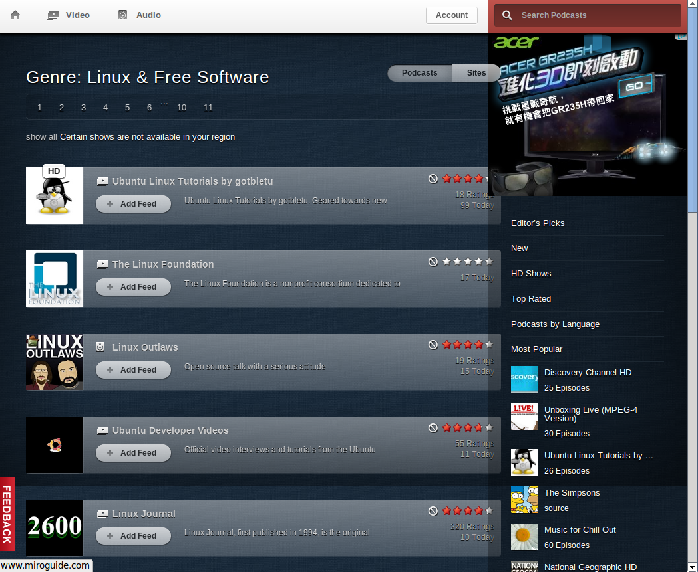

也紀念我們永遠的朋友 李士傑先生（Shih-Chieh Ilya Li）。
如何使用開源 Podcast 播放器訂閱開放內容
提供 Podcast 訂閱功能的播放軟體很多，但是兼具播放器功能的並不多，遑論能夠跨平台運作，Miro 正是其中一款。點選左方工具列最上方的〔Miro〕，可以在窗格內瀏覽 Podcast 列表；如果你習慣以網頁方式瀏覽，可以直接連線至網站 https://www.miroguide.com。Miro 提供多種分類方式，包括點閱率、語言、類別等，並可在右上方搜尋窗格輸入關鍵字進行搜尋。
在 Miro 軟體的窗格中瀏覽時，若發現想訂閱的 Podcast，點選「Add Feed」之後，Miro便會將其自動加入訂閱清單；如果是在一般網頁瀏覽，請點選 RSS 之後複製其網址，再回到 Miro 中，點選上方工具列的【側面窗格】→【Add Podcast】，或按下快速鍵 Ctrl+N，將剛剛複製的網址貼上，按下「Create Podcast」加入訂閱清單。您可在 Miro 下方的欄位點選〔Auto-Download All〕，讓 Miro 自動下載頻道的新影片；點選〔設定〕進行管理，讓 Miro 定期刪除已看過的影片。
▲ 圖1：Miro Guide
Open Source 相關頻道
-
頻道名稱：Linux Journal
- 語言：英文
- 格式：影片
- 更新頻率：一個月以上
- 評分：4.2顆星（220 人評分）
- 網址：https://www.miroguide.com/feeds/5671
- 簡介：主要為影片教學，由 Linux 社群所製作。每期邀請不同人主講，時間長度多在五分鐘之內。
-
頻道名稱：Going Linux
- 語言：英文
- 格式：音訊
- 更新頻率：數天至兩週
- 評分：3.9顆星（7 人評分）
- 網址：https://www.miroguide.com/audio/12822
- 簡介：討論 Linux 的頻道，兩人對談，內容與主題較上個頻道 Linux Journal 輕鬆。更新的頻率相當穩定。
▲ 圖2：Going Linux
-
頻道名稱：Meet the GIMP!
- 語言：英文
- 格式：影片
- 更新頻率：一週至兩週
- 評分：4.3 顆星（191 人評分）
- 網址：https://www.miroguide.com/feeds/3134
- 簡介：Gimp 教學頻道。Gimp 是一套可以在 GNU/Linux、Windows、Mac Os上運行的開源影像處理軟體，功能媲美 Adobe 的 Photoshop。Meet the GIMP! 每期以不同主題作實務教學，包括影像去背、編修、照片合成等。
-
頻道名稱：JoomStew Radio
- 語言：英文
- 格式：音訊
- 更新頻率：一週至數週
- 評分：尚無人評分
- 網址：https://www.miroguide.com/audio/14109
- 簡介：以對談為主。介紹 Joomla 的新版本、活動、社群消息，以及訪問網站開發者。
-
頻道名稱：OnOpenSource (Video)
- 語言：英文
- 格式：影片
- 更新頻率：不定期
- 評分：4.1 顆星（20 人評分）
- 網址：https://www.miroguide.com/feeds/4535
- 簡介：邀請自由軟體領域的專家進行主講、對談、教學，影片長度從數分鐘到二十分鐘不等。主題涵蓋Linux、IT 新聞、Puby、Python、PHP 等，主題多元而深入，可惜近期較少更新。
-
頻道名稱：Drupal Easy
- 語言：英文
- 格式：音訊
- 更新頻率：不定期，約一個月一次
- 網址：https://drupaleasy.com/podcast
- 簡介：主題涵蓋 Drupal 開發訊息以及社群動態。
-
頻道名稱：Software Freedom Law Show
- 語言：英文
- 格式：音訊
- 更新頻率：不定期
- 網址：https://www.softwarefreedom.org/podcast/
- 簡介：介紹有關軟體自由牽涉到的法律概念。
-
頻道名稱：Linux Outlaws
- 語言：英文
- 格式：音訊
- 更新頻率：一週
- 評分：4.1 顆星（19 人評分）
- 網址：https://www.miroguide.com/audio/12099
- 簡介：兩位務實的技客主持的節目，主題包括 Linux、自由軟體以及開放科技。有時候會跳脫上述主題，談論主持人感興趣的話題，像是曲棍球以及其他人沒聽過的樂團。
-
頻道名稱：FLOSS Weekly
- 語言：英文
- 格式：影片
- 更新頻率：一週
- 評分：3.9 顆星（15 人評分）
- 網址：https://www.miroguide.com/audio/5790
- 簡介：以訪談為主，常會請來著名專案的開發者上節目。
-
頻道名稱：Ubuntu Linux Tutorials by gotbletu
- 語言：英文
- 格式：影片
- 更新頻率：每天
- 評分：4.1 顆星（18 人評分）
- 網址：https://www.miroguide.com/feeds/10728
- 簡介：gotbletu 所做的 Ubuntu Linux 教學短片。
▲ 圖3：Linux Tutorials by gotbletu
-
頻道名稱：Railscasts
- 語言：英文
- 格式：影片
- 更新頻率：一週
- 評分：4.1 顆星（17 人評分）
- 網址：https://www.miroguide.com/feeds/2905
- 簡介：以營幕錄影方式呈現 Ruby on Rails 的教學短片，包含基本教學以及奇技展示。
-
頻道名稱：DistroWatch Podcast
- 語言：英文
- 格式：音訊
- 更新頻率：一週
- 網址：https://distrowatch.com/news/podcast.xml
- 簡介：播報內容主要包括 DistroWatch 的網站內容，除了念網站內容外還包括客座主持人的個人意見。
-
頻道名稱：mintCast
- 語言：英文
- 格式：音訊
- 更新頻率：一週
- 評分：4 顆星（7 人評分）
- 網址：https://www.miroguide.com/audio/12356
- 簡介：由 Linux Mint 社群製播的 Podcast。
-
頻道名稱：The Linux Link Tech Show
- 語言：英文
- 格式：音訊
- 更新頻率：一週
- 評分：3.4 顆星（15 人評分）
- 網址：https://www.miroguide.com/audio/12245
- 簡介：播報內容主要涵蓋 GNU/Linux 以及 FOOS，有時候會請來業界朋友上節目。
-
頻道名稱：Ubuntu UK Podcast
- 語言：英文
- 格式：音訊
- 更新頻率：兩週
- 評分：4.5 顆星（4 人評分）
- 網址：https://www.miroguide.com/audio/5950
- 簡介：圍繞 Ubuntu 為中心的訪談、討論、以及新聞，並且帶有英國觀點。
-
頻道名稱：Android Atlas Weekly (SD)
- 語言：英文
- 格式：影片
- 更新頻率：一週
- 評分：尚無人評分
- 網址：https://www.miroguide.com/feeds/13760
- 簡介：Cnet 的 Android Podcast。
-
頻道名稱：This Week in Fedora
- 語言：英文
- 格式：音訊
- 更新頻率：兩週
- 評分：3 顆星（1 人評分）
- 網址：https://www.miroguide.com/audio/14040
- 簡介：主要內容為訪問 Fedora 社群的貢獻者。有時候也談論關於 Fedora 的新聞。
-
頻道名稱：The Ruby Show
- 語言：英文
- 格式：音訊
- 更新頻率：一週
- 網址：https://rubyshow.com/
- 簡介：Ruby 相關的 Podcast，談最新 Ruby 以及 Rails 相關新聞，討論社群中熱門話題。
-
頻道名稱：TuxRadar Podcast
- 語言：英文
- 格式：音訊
- 更新頻率：兩週
- 評分：尚無人評分
- 網址：https://www.miroguide.com/audio/13468
- 簡介：談論 Linux 以及自由軟體相關訊息的節目。
-
頻道名稱：Linux Game Cast
- 語言：英文
- 格式：影片
- 更新頻率：一週
- 評分：尚無人評分
- 網址：https://www.miroguide.com/feeds/14926
- 簡介：提供 Linux 下遊戲評論。
目前 Miro 提供的 Podcast 以英文為主，德文次之，中文及其它語言的頻道較少。Miro 的 Podcast 數量相當豐富，也提供訂閱熱門的頻道如 TED。然而頻道數量不及 iTunes 卻是不爭的事實，接下來，我們就要示範如何在 Miro 上訂閱來自其它網站，以及 iTunes 上的 Podcast。
加入其它網站 Podcast
網路上的 Podcast 種類五花八門，數量也讓人眼花撩亂。有些網站只提供特定技術相關的 Podcast，例如 Ruby 5、Python ，也有的網站整合了許多 Podcast，科技與程式技術類比較豐富的平台有 CNET、TECHPOCASTS、Podnutz。進入網站找尋自己想訂閱的頻道，將 RSS 網址複製，回到 Miro 內點選【側面窗格】→【Add Podcast】，將訂閱網址貼上以完成訂閱。
如果不知道要去那裡找想追蹤的 Podcast，可以去專門的 Podcast 入口網站。這些 Podcast 入口網站，分門別類收集不同類型的 Podcast 節目，像是 Podcast Ally、Podcast.com。提供 Linux 發行版本訊息以及排名的網站 DistroWatch，除了整理相關的自由軟體 Podcast 連結外，自己網站也有發行 Podcast。臺灣也有 myaudiocast，提供免費 Podcast 服務，只要是非商業性 Podcast，提供上傳空間，以及產生 Podcast feed。
從 iTunes 加入 Podcast
如果本身已經有 iTunes 帳號，可打開 iTunes，點選一個有興趣的 Podcast 加入訂閱，再至左方資料庫列表的〔Podcast〕查詢訂閱網址。在資料庫內的該 Podcast 上按下右鍵，點選【複製 Podcast URL】，再如同前述方法，點選上方工具列的【側面窗格】→【Add Podcast】即完成。
▲ 圖4：iTunes 裡也有 Podcast 目錄，可供用戶選擇想訂閱的節目
如果想從 iTunes 轉移到 Miro，若每個頻道都要手動複製訂閱網址過於麻煩，此時我們可使用輸出 / 輸入功能將所有的訂閱頻道轉移過來。開啟 iTunes，在左方窗格中的〔Podcast〕按右鍵，點選【匯出】，選擇存檔類型為 OPML 並存檔。在 Miro 上方工具列選擇【Import Podcasts (OPML)】，選擇剛剛儲存下來的檔案，便將所有的訂閱清單輸入至 Miro 了。
▲ 圖5：iTunes 裡訂閱 Podcast 的對話視窗
Miro 是跨平台的開源軟體，可在 Linux、Windows、Mac OS 上執行。如果您常看 Youtube 影片、需要同步 iPhone / Android / PSP 等裝置、喜歡訂閱 Podcast，或是正在找一個結合轉檔功能的播放器，那麼多功能的 Miro 絕對符合您的需求。
專欄總覽


E-Mail：contact@openfoundry.org Address：台北市南港區研究院路2段128號 中央研究院資訊科學研究所 . 隱私權條款. 使用條款